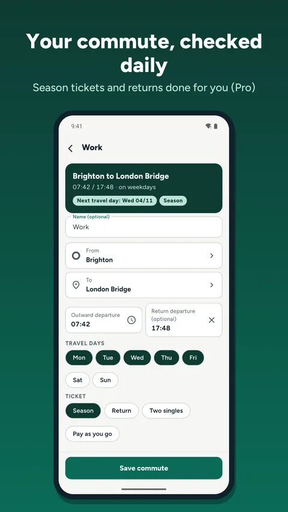

Independent app. FareBack is made by Kodfu Bilisim. It is not affiliated with or endorsed by any train company, National Rail, Network Rail, Rail Delivery Group, Great British Railways or the Department for Transport. You submit every claim yourself; the train company decides whether to pay.
FareBack support
Last updated: 28 November 2026
FareBack is an independent app for Android phones (on Google Play in the United Kingdom). It checks the train journeys you save in Great Britain, tells you when a delay means your journey may qualify for compensation under the train company's Delay Repay scheme (or its own scheme), and gets your claim ready. You then submit the claim yourself on the train company's own website.
Contact us
Email gurkancaner@kodfu.com for help, feedback, privacy questions or anything else. We aim to reply within 2 working days.
It helps if you tell us your phone model, the FareBack version and, for a journey problem, the date, the stations and the train company. Please do not send us booking references, smartcard numbers, ticket photos or bank details: we never need them.
How FareBack works
- Save a journey. Add your stations, date, times, train company and ticket type.
- FareBack checks it after the train is due. It compares the arrival time with National Rail data (Darwin and Historical Service Performance, from the Rail Data Marketplace).
- You see the result. If the journey may qualify, FareBack shows the delay and an estimate, for example "about £4.20; the train company makes the final decision".
- Open your Claim Pack. Each detail the claim form asks for has a copy button, and there is a link to the train company's own claim page.
- You submit the claim yourself on the train company's website.
FareBack never submits claims, never acts on your behalf and never takes any share of your compensation. Any money the train company pays goes to you.
Free and FareBack Pro
You can use FareBack for free: up to 30 journeys a month checked, Claim Packs, deadline reminders, a claim tracker and a Delay Repay calculator. FareBack Pro is an optional subscription that checks your commute every travel day, does the season ticket maths, looks back 28 days for delays you can still claim and adds unlimited journeys and claim history export. See FareBack for commuters.
- FareBack Pro Monthly: £1.99 a month.
- FareBack Pro Annual: £12.99 a year, with a 7-day free trial.
Prices include VAT. Apple or Google bills the subscription, and it renews automatically until you cancel it in your App Store or Google Play subscription settings. Full details are in our terms.
Let FareBack watch your trains
Save a journey and FareBack checks how late the train really arrived, using National Rail data, after it is due. If you can claim, you see the delay, the train company’s rule and an estimate, and your Claim Pack is ready: every detail with a copy button and a link to the right claim form. You submit the claim yourself, and every penny goes to you.



Free: up to 30 journeys a month checked, Claim Packs, reminders before the 28-day window closes, a claim tracker and a Delay Repay calculator for single, return and season tickets.
FareBack Pro, £1.99 a month or £12.99 a year (7-day free trial on annual): your commute checked every travel day, season ticket maths done for you, a 28-day look-back with a Claim Pack for every delay you can still claim, unlimited journeys and claim history export. Prices include VAT.
Android now; iPhone version not yet available. For train journeys in Great Britain. FareBack never takes a cut.
Questions and answers
How does FareBack know my train was late?
After your train is due to arrive, FareBack checks its actual arrival time against National Rail data: the Darwin service and Historical Service Performance, which we get through the Rail Data Marketplace under the Open Government Licence. It works out the delay at your destination from the difference between the scheduled and actual arrival times, and the journey screen shows where the time came from. If a train cannot be found in the data, you can enter the time you arrived and FareBack works it out the same way.
Why does it say "about"?
The amount is an estimate. FareBack works it out from your ticket type, the price you paid, the length of the delay and the train company's compensation rules. The train company checks the claim against its own records and makes the final decision on whether to pay and how much, so the amount you receive can be different, or there may be no payment at all.
Does FareBack claim for me?
No. You submit every claim yourself on the train company's own website. FareBack never submits claims, never acts on your behalf and never takes any share of your compensation. The Claim Pack just saves you time: it lays out the details the form asks for, with copy buttons, and opens the right claim page.
Which train companies does FareBack cover?
Train companies in Great Britain that run Delay Repay or their own delay compensation scheme. FareBack does not cover Transport for London (TfL) services, Eurostar or NI Railways.
What are DR15 and DR30?
They show when a train company's Delay Repay scheme starts to pay. With DR15, you can usually claim when you arrive at least 15 minutes late. With DR30, the delay needs to be at least 30 minutes. The amount usually goes up with the length of the delay, as a share of your ticket price. FareBack uses the rules for your train company and shows which one applies.
How long do I have to claim?
Usually 28 days from the date you travelled. Each train company sets its own deadline, so check its claim page, which the Claim Pack links to. Claiming soon after the journey is easiest.
When do I need to enter my arrival time?
Only when FareBack cannot find your train in the National Rail data, for example a train that was added at short notice. Enter the time your train really arrived at your destination, and FareBack works out the delay and estimate from it. The train company checks every claim against its own records, so an accurate time matters. You can edit a journey in the app if you made a mistake.
Notifications are not arriving. What can I do?
- Check that notifications are allowed for FareBack in your phone's settings (iPhone: Settings > Notifications > FareBack; Android: Settings > Apps > FareBack > Notifications).
- Check that a Focus mode or Do Not Disturb is not holding them back.
- In FareBack's settings, check your alert options and quiet hours. Quiet hours can hold alerts back.
- On Android, battery saving can delay notifications. Let FareBack run without battery restrictions.
- Remember that FareBack checks a journey after the train arrives, so an alert comes some time after arrival, not during the journey.
Still stuck? Email us with your phone model and FareBack version.
How do I cancel Pro or restore purchases?
Apple or Google bills FareBack Pro, so you cancel it with them. We cannot cancel or refund it for you.
- iPhone: Settings > your name > Subscriptions > FareBack.
- Android: Google Play > your profile picture > Payments and subscriptions > Subscriptions > FareBack.
Cancel at least 24 hours before the renewal date, or before the free trial ends, to avoid the next charge. Uninstalling FareBack or deleting your data does not cancel a subscription. Refund requests are handled by Apple or Google under their own policies.
If Pro is missing after you reinstall the app or change phone, tap Restore purchases in the app while signed in to the same Apple ID or Google account you used to subscribe.
How do I delete my data?
The same instructions are on the home page.
In the app: open the More tab and tap Delete all my data. This deletes your data from our server straight away and wipes FareBack's data from your phone. If you want a copy first, use the export in the app.
By email: if you no longer have the app, email gurkancaner@kodfu.com with the subject "Delete my FareBack data". FareBack has no accounts, so we cannot look you up by name or email address: tell us roughly when you last used FareBack and which journeys you saved (dates, stations and train company), and we will find and delete the matching data on our server. Data on your phone is removed when you uninstall FareBack.
What we delete anyway: journeys are deleted from our server 35 days after the travel date (60 days if the train was delayed or cancelled), and everything linked to an install we have not seen for 13 months is deleted. The full retention table is in our privacy policy.
I have a new phone. Can I move my data?
FareBack has no account, so a new install starts fresh. Tap Restore purchases to bring FareBack Pro back. Your claim details (such as the name and address you entered for claim forms), ticket photos and claim progress stay on the old phone, so finish or note any claims in progress there first. You can use the export in the app to keep a copy.
Is FareBack an official National Rail or train company app?
No. FareBack is an independent app made by Kodfu Bilisim. It is not affiliated with or endorsed by any train company, National Rail, Network Rail, Rail Delivery Group, Great British Railways or the Department for Transport.